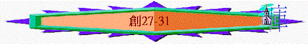

|
太 古 歷 史 ( 1 – 11：9 ) |
先 祖 歷 史 ( 1 1：1 0 –5 0 ) |
||||||
|
創造篇 |
墮落篇 |
洪水篇 |
巴別篇 |
亞伯拉罕篇 |
以撒篇 |
雅各篇 |
約瑟篇 |
三.雅各----更新的生命(27-36)
～聖經記載雅各的篇幅比以撒特別多，可能因為他不像以撒那麼順服，他人生有自己的看法，他起初仍不以父親的神為自己的神，但神的應許中帶有與人建立關係的內容，神要用各種方法扭轉雅各的生命，使他有一日可以甘心承受應許，以神為他的神
～而在救恩角度下，我們看到神的救恩由個人(亞伯拉罕、以撒)推展到以色列(整個民族)，而神沒有因人的任性與屬世，而放棄揀選人，神仍有祂的憐憫
～從雅各生平中，不單看到神如何改變雅各的人生，也看到神如何保守祂的應許落實(例如保守承受應許的人----雅各之性命)
1.人的方法(27-31)
「隨後又生了以掃的兄弟，手抓住以掃的腳跟，因此給他起名叫雅各（就是抓住的意思）。利百加生下兩個兒子的時候，以撒年正六十歲。」25:26
～從一出世，雅各已是靠自己的方法抓住自己想得的事情，而事實上，雅各的確用自己的方法追求自己想得的事
A.奪祝福
a.祝福的心意
「以撒年老，眼睛昏花，不能看見，就叫了他大兒子以掃來，說：「我兒。」以掃說：「我在這裡。」他說：「我如今老了，不知道哪一天死。現在拿你的器械，就是箭囊和弓，往田野去為我打獵，照我所愛的做成美味，拿來給我吃，使我在未死之先給你祝福。」」27:1-4
「以撒因著信，就指著將來的事給雅各、以掃祝福。」來11:20
～以撒趁自己仍在世時，憑信心為他兒子祝福，他的心意是想將最好的祝福與神的應許給他所愛的兒子----以掃
b.母兒的欺騙
「利百加就對他兒子雅各說：「我聽見你父親對你哥哥以掃說：
『你去把野獸帶來，做成美味給我吃，我好在未死之先，在耶和華面前給你祝福。』」27:6-7
「你拿到你父親那裡給他吃，使他在未死之先給你祝福。」」
27:10
「利百加又把家裡所存大兒子以掃上好的衣服給他小兒子雅各穿上，又用山羊羔皮包在雅各的手上和頸項的光滑處，就把所做的美味和餅交在他兒子雅各的手裡。」27:15-17
c.父親的祝福
「他就上前與父親親嘴。他父親一聞他衣服上的香氣，就給他祝福，說：我兒的香氣如同耶和華賜福之田地的香氣一樣。願神賜你天上的甘露，地上的肥土，並許多五穀新酒。願多民事奉你，多國跪拜你。願你作你弟兄的主；你母親的兒子向你跪拜。凡咒詛你的，願他受咒詛；為你祝福的，願他蒙福。」27:27-29
(1)地土蒙福
(2)地位崇高
(3)得蒙保守
～以撒的祝福是按神對亞伯拉罕所應許的向兒子祝福(他也存信心祝福)
d.以掃的痛恨
(1)痛哭
(A)事實的失去
「以掃聽了他父親的話，就放聲痛哭，說：「我父啊，求你也為我祝福！」以撒說：「你兄弟已經用詭計來將你的福分奪去了。」」27:34-35
「以撒回答以掃說：「我已立他為你的主，使他的弟兄都給他作僕人，並賜他五穀新酒可以養生。我兒，現在我還能為你做什麼呢？」」27:37
(B)真正的原因
(a)世俗的貪戀
「恐怕有淫亂的、有貪戀世俗如以掃的．他因一點食物把自己長子的名分賣了。」來12:16
(b)福份的輕看
(c)真神的揀選
「耶和華說：「我曾愛你們。」你們卻說：「你在何事上愛我們呢？」耶和華說：「以掃不是雅各的哥哥嗎？我卻愛雅各，惡以掃，使他的山嶺荒涼，把他的地業交給曠野的野狗。」」瑪1:2-3
(C)父親的補賞
「以掃對他父親說：「父啊，你只有一樣可祝的福嗎？我父啊，求你也為我祝福！」以掃就放聲而哭。他父親以撒說：地上的肥土必為你所住；天上的甘露必為你所得。你必倚靠刀劍度日，又必事奉你的兄弟；到你強盛的時候，必從你頸項上掙開他的軛。」27:38-40
「約蘭年間，以東人背叛猶大，脫離他的權下，自己立王。約蘭率領所有的戰車往撒益去，夜間起來，攻打圍困他的以東人和車兵長；猶大兵就逃跑，各回各家去了。這樣，以東人背叛猶大，脫離他的權下，直到今日。那時立拿人也背叛了。」王下8:20-22
～以東一直受制於以色列，但在王下8:20-22中，以東終可掙開以色列的軛！
(2)痛恨
「你必倚靠刀劍度日，又必事奉你的兄弟；到你強盛的時候，必從你頸項上掙開他的軛。以掃因他父親給雅各祝的福，就怨恨雅各，心裡說：「為我父親居喪的日子近了，到那時候，我要殺我的兄弟雅各。」」27:40-41
B.保性命
a.母親的建議
「有人把利百加大兒子以掃的話告訴利百加，他就打發人去，叫了他小兒子雅各來，對他說：「你哥哥以掃想要殺你，報仇雪恨。現在，我兒，你要聽我的話：起來，逃往哈蘭、我哥哥拉班那裡去，同他住些日子，直等你哥哥的怒氣消了。」27:42-44
b.父親的祝福
「以撒叫了雅各來，給他祝福，並囑咐他說：「你不要娶迦南的女子為妻。你起身往巴但亞蘭去，到你外祖彼土利家裡，在你母舅拉班的女兒中娶一女為妻。願全能的神賜福給你，使你生養眾多，成為多族，將應許亞伯拉罕的福賜給你和你的後裔，使你承受你所寄居的地為業，就是神賜給亞伯拉罕的地。」以撒打發雅各走了，他就往巴但亞蘭去，到亞蘭人彼土利的兒子拉班那裡。拉班是雅各、以掃的母舅。」28:1-5
～巴旦亞蘭是亞蘭的平原
c.雅各的逃亡
「雅各出了別是巴，向哈蘭走去；」28:10
～哈蘭即巴旦亞蘭
d.真神的顯現
(1)天梯的夢見
「到了一個地方，因為太陽落了，就在那裡住宿，便拾起那地方的一塊石頭枕在頭下，在那裡躺臥睡了，夢見一個梯子立在地上，梯子的頭頂著天，有神的使者在梯子上，上去下來。」28:11-12
(2)父神的啟示
(A)天梯立在地上----地上的福氣
「耶和華站在梯子以上（或作：站在他旁邊），說：「我是耶和華你祖亞伯拉罕的神，也是以撒的神；我要將你現在所躺臥之地賜給你和你的後裔。你的後裔必像地上的塵沙那樣多，必向東西南北開展；地上萬族必因你和你的後裔得福。」28:13-14
(B)耶和華在梯上----同在的應許
「我也與你同在。你無論往那裡去，我必保佑你，領你歸回這地，總不離棄你，直到我成全了向你所應許的。」」28:15
(3)更深的意義
(A)神在這裡
「雅各睡醒了，說：「耶和華真在這裡，我竟不知道！」就懼怕，說：「這地方何等可畏！這不是別的，乃是神的殿，也是天的門。」」28:16-17
「他就給那地方起名叫伯特利（就是神殿的意思）；但那地方起先名叫路斯。」28:19
(B)有神的使者保守
「夢見一個梯子立在地上，梯子的頭頂著天，有神的使者在梯子上，上去下來。」28:12
「雅各仍舊行路，神的使者遇見他。」32:1
(C)基督的預表
「又說：「我實實在在的告訴你們，你們將要看見天開了，神的使者上去下來在人子身上。」」約1:51
～基督就是天梯，神和人中間的橋樑與中保，人藉祂可以去到神那裡
e.雅各的承諾
「雅各許願說：「神若與我同在，在我所行的路上保佑我，又給我食物吃，衣服穿，使我平平安安的回到我父親的家，我就必以耶和華為我的神。我所立為柱子的石頭也必作神的殿；凡你所賜給我的，我必將十分之一獻給你。」」28:20-22
～從他的承諾中，看到他仍未以神為他的神，但他開始認識若單靠自己，也未有十足把握可以平安回到父親家
C.娶拉結
a.相遇
「雅各起行，到了東方人之地，」29:1
「雅各正和他們說話的時候，拉結領著他父親的羊來了，因為那些羊是他牧放的。雅各看見母舅拉班的女兒拉結和母舅拉班的羊群，就上前把石頭轉離井口，飲他母舅拉班的羊群。雅各與拉結親嘴，就放聲而哭。」29:9-11
b.服事
「拉班聽見外甥雅各的信息，就跑去迎接，抱著他，與他親嘴，領他到自己的家。雅各將一切的情由告訴拉班。」29:13
「拉班有兩個女兒，大的名叫利亞，小的名叫拉結。利亞的眼睛沒有神氣，拉結卻生得美貌俊秀。雅各愛拉結，就說：「我願為你小女兒拉結服事你七年。」拉班說：「我把他給你，勝似給別人，你與我同住吧！」雅各就為拉結服事了七年；他因為深愛拉結，就看這七年如同幾天。」29:16-20
～利亞有疲乏意思，拉結有母羊意思，雅各愛拉結，甘心為拉結而服事拉班七年
c.被騙
「雅各對拉班說：「日期已經滿了，求你把我的妻子給我，我好與他同房。」拉班就擺設筵席，請齊了那地方的眾人。」29:21-22
「到了早晨，雅各一看是利亞，就對拉班說：「你向我做的是什麼事呢？我服事你，不是為拉結嗎？你為什麼欺哄我呢？」
」29:25
「你為這個滿了七日，我就把那個也給你，你再為他服事我七年。」」29:27
d.迎娶
「雅各就如此行。滿了利亞的七日，拉班便將女兒拉結給雅各為妻。拉班又將婢女辟拉給女兒拉結作使女。雅各也與拉結同房，並且愛拉結勝似愛利亞，於是又服事了拉班七年。」29:28-30
e.爭寵
(1)利亞失寵
～神知道利亞失寵，卻使她有生育得兒子
(A)第1個兒子：流便----神的看見
「耶和華見利亞失寵（原文作被恨；下同），就使他生育，拉結卻不生育。利亞懷孕生子，就給他起名叫流便（就是有兒子的意思），因而說：「耶和華看見我的苦情，如今我的丈夫必愛我。」」29:31-32
(B)第2個兒子：西緬----神的聽見
「他又懷孕生子，就說：「耶和華因為聽見我失寵，所以又賜給我這個兒子」，於是給他起名叫西緬（就是聽見的意思）。」29:33
(C)第3個兒子：利未----聯合期望
「他又懷孕生子，起名叫利未（就是聯合的意思），說：「我給丈夫生了三個兒子，他必與我聯合。」」29:34
(D)第4個兒子：猶大----人的讚美
(2)拉結嫉妒
～拉結嫉妒下，安排使女辟拉生兒子而歸為自己孩子
(A)第5個兒子：但----伸冤
「我未來之先，你所有的很少，現今卻發大眾多，耶和華隨我的腳步賜福與你。如今，我什麼時候才為自己興家立業呢？」」30:30
「拉結說：「神伸了我的冤，也聽了我的聲音，賜我一個兒子」，因此給他起名叫但（就是伸冤的意思）。」30:6
(B)第6個兒子：拿弗他利----相爭
「拉結的使女辟拉又懷孕，給雅各生了第二個兒子。拉結說：「我與我姊姊大大相爭，並且得勝」，於是給他起名叫拿弗他利（就是相爭的意思）。」30:7-8
(3)利亞爭寵
「利亞見自己停了生育，就把使女悉帕給雅各為妾。」30:9
～她安排自己的使女悉帕與為雅各生兒子
(A)第7個兒子：迦得----萬幸
「利亞的使女悉帕給雅各生了一個兒子。利亞說：「萬幸！」於是給他起名叫迦得（就是萬幸的意思）。」30:10-11
(B)第8個兒子：亞設----有福
「利亞的使女悉帕又給雅各生了第二個兒子。利亞說：「我有福啊，眾女子都要稱我是有福的」，於是給他起名叫亞設（就是有福的意思）。」」30:12-13
(4)彼此交易
「割麥子的時候，流便往田裡去，尋見風茄，拿來給他母親利亞。拉結對利亞說：「請你把你兒子的風茄給我些。」
利亞說：「你奪了我的丈夫還算小事嗎？你又要奪我兒子的風茄嗎？」拉結說：「為你兒子的風茄，今夜他可以與你同寢。」」30:14-15
～風茄其根莖似人體下部，當地人迷信食後會催情，易懷孕
～利亞用風茄與拉結交易，得與丈夫同寢，之後生了兒子
(A)第9個兒子：以薩迦----價值
「神應允了利亞，他就懷孕，給雅各生了第五個兒子。
利亞說：「神給了我價值，因為我把使女給了我丈夫」，於是給他起名叫以薩迦（就是價值的意思）。」30:17-18
(B)第10個兒子：西布倫----同住
「利亞又懷孕，給雅各生了第六個兒子。利亞說：「神賜我厚賞；我丈夫必與我同住，因我給他生了六個兒子」，於是給他起名西布倫（就是同住的意思）。」30:19-20
(C)女兒底拿----復仇
「後來又生了一個女兒，給他起名叫底拿。」30:21
(5)真神顧念----第11個兒子：約瑟(增添意思)
「神顧念拉結，應允了他，使他能生育。拉結懷孕生子，說：「神除去了我的羞恥」，就給他起名叫約瑟（就是增添的意思），意思說：「願耶和華再增添我一個兒子。」」30:22-24
～拉結終得眷顧，終得一兒子----約瑟
D.回家鄉
「拉結生約瑟之後，雅各對拉班說：「請打發我走，叫我回到我本鄉本土去。」30:25
～雅各要回自己家鄉，他要面對很多問題：拉班會否放他走呢？他的哥哥以掃會否殺他；所以雅各要用方法解決以上問題
a.離開拉班
「請你把我服事你所得的妻子和兒女給我，讓我走；我怎樣服事你，你都知道。」」30:26
(1)奪工價
(A)用利挽留
「拉班對他說：「我若在你眼前蒙恩，請你仍與我同住，因為我已算定，耶和華賜福與我是為你的緣故」；
又說：「請你定你的工價，我就給你。」」30:27-28
「我未來之先，你所有的很少，現今卻發大眾多，耶和華隨我的腳步賜福與你。如今，我什麼時候才為自己興家立業呢？」」30:30
～拉班也見到神與雅各同在，因此雅各仍留下，拉班也蒙福，所以用工價利誘他留下
(B)巧奪羊群
「今天我要走遍你的羊群，把綿羊中凡有點的、有斑的，和黑色的，並山羊中凡有斑的、有點的，都挑出來；將來這一等的就算我的工價。」30:32
「又使自己和雅各相離三天的路程。雅各就牧養拉班其餘的羊。」30:36
「雅各拿楊樹、杏樹、楓樹的嫩枝，將皮剝成白紋，使枝子露出白的來，將剝了皮的枝子，對著羊群，插在飲羊的水溝裡和水槽裡，羊來喝的時候，牝牡配合。
羊對著枝子配合，就生下有紋的、有點的、有斑的來。」30:37-39
「到羊群肥壯配合的時候，雅各就把枝子插在水溝裡，使羊對著枝子配合。只是到羊瘦弱配合的時候就不插枝子。這樣，瘦弱的就歸拉班，肥壯的就歸雅各。
於是雅各極其發大，得了許多的羊群、僕婢、駱駝，和驢。」30:41-43
「這樣，神把你們父親的牲畜奪來賜給我了。」31:9
～楊樹、杏樹、楓樹的嫩枝皮呈深色，肉質是白色，古時的人相信環境影響交配後的下一代，而羊通常不會在吃草時交配，會在飲水時交配
～「牝牡」指雌雄
～雅各在牧放拉班的羊時，用以上方法使牠們產生有班點的下一代，而當羊群肥壯的，就在牠們交配時把枝子插在水中，牠們就生產肥壯而有班點或黑色的下一代，而瘦弱交配時，則不插枝子
～這樣瘦弱的歸拉班，肥壯的歸雅各
～而雅各也知道今次他得肥壯的羊群，也是神賜的
(2)離拉班
(A)神的保證
(a)同在的應許
「雅各見拉班的氣色向他不如從前了。耶和華對雅各說：「你要回你祖、你父之地，到你親族那裡去，我必與你同在。」」31:2-3
(b)現實的體會
「這樣，神把你們父親的牲畜奪來賜給我了。羊配合的時候，我夢中舉目一看，見跳母羊的公羊都是有紋的、有點的、有花斑的。神的使者在那夢中呼叫我說：『雅各。』我說：『我在這裡。』」31:9-11
～他今次得羊事件，他體會到原來神是觀看的，神有賜福與保守
(c)過往的承諾
「我是伯特利的神；你在那裡用油澆過柱子，向我許過願。現今你起來，離開這地，回你本地去吧！』」」30:13
～伯特利是從前神與雅各顯現的地方，神過往承諾他可以回到這地，如今神再提雅各，神仍記得以往的承諾
(d)現今的吩咐
～神要他離開這地，回本土去
(B)家人支持
「我們不是被他當作外人嗎？因為他賣了我們，吞了我們的價值。神從我們父親所奪出來的一切財物，那就是我們和我們孩子們的。現今凡神所吩咐你的，你只管去行吧！」」31:15-16
(C)一家逃走
「雅各起來，使他的兒子和妻子都騎上駱駝，又帶著他在巴但亞蘭所得的一切牲畜和財物，往迦南地、他父親以撒那裡去了。當時拉班剪羊毛去了，拉結偷了他父親家中的神像。」31:17-19
(D)神的保守
「拉班帶領他的眾弟兄去追趕，追了七日，在基列山就追上了。夜間，神到亞蘭人拉班那裡，在夢中對他說：「你要小心，不可與雅各說好說歹。」」31:23-24
「我手中原有能力害你，只是你父親的神昨夜對我說：『你要小心，不可與雅各說好說歹。』」31:29
(E)偶像收藏
「現在你雖然想你父家，不得不去，為什麼又偷了我的神像呢？」」31:30
「拉班進了雅各、利亞，並兩個使女的帳棚，都沒有搜出來，就從利亞的帳棚出來，進了拉結的帳棚。拉結已經把神像藏在駱駝的馱簍裡，便坐在上頭。拉班摸遍了那帳棚，並沒有摸著。拉結對他父親說：「現在我身上不便，不能在你面前起來，求我主不要生氣。」這樣，拉班搜尋神像，竟沒有搜出來。」31:33-35
(F)當面對質
「雅各就發怒斥責拉班說：「我有什麼過犯，有什麼罪惡，你竟這樣火速地追我？」31:36
「我這二十年在你家裡，為你的兩個女兒服事你十四年，為你的羊群服事你六年，你又十次改了我的工價。
若不是我父親以撒所敬畏的神，就是亞伯拉罕的神與我同在，你如今必定打發我空手而去。神看見我的苦情和我的勞碌，就在昨夜責備你。」」31:41-42
(G)二人立約
「來吧！你我二人可以立約，作你我中間的證據。」
雅各就拿一塊石頭立作柱子，又對眾弟兄說：「你們堆聚石頭。」他們就拿石頭來堆成一堆，大家便在旁邊吃喝。拉班稱那石堆為伊迦爾撒哈杜他，雅各卻稱那石堆為迦累得（都是以石堆為證的意思）。」31:44-47
「你若苦待我的女兒，又在我的女兒以外另娶妻，雖沒有人知道，卻有神在你我中間作見證。」拉班又說：「你看我在你我中間所立的這石堆和柱子。這石堆作證據，這柱子也作證據。我必不過這石堆去害你；你也不可過這石堆和柱子來害我。」31:50-52
～立約的內容是雅各不苦待拉班的女兒，而拉班也不害雅各
～「伊迦爾撒哈杜」是亞蘭語，「迦累」是希伯來語，也有以石堆為證意思